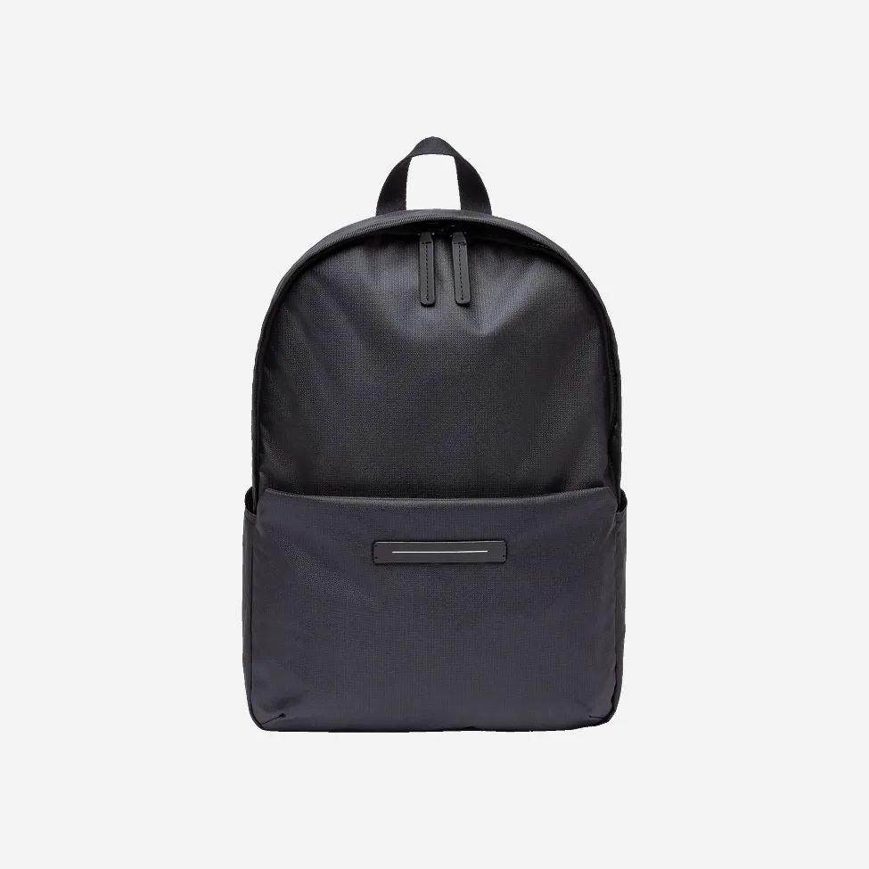
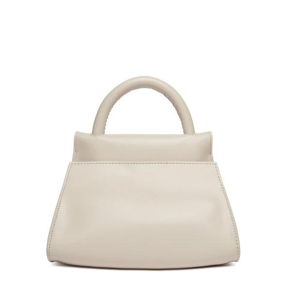
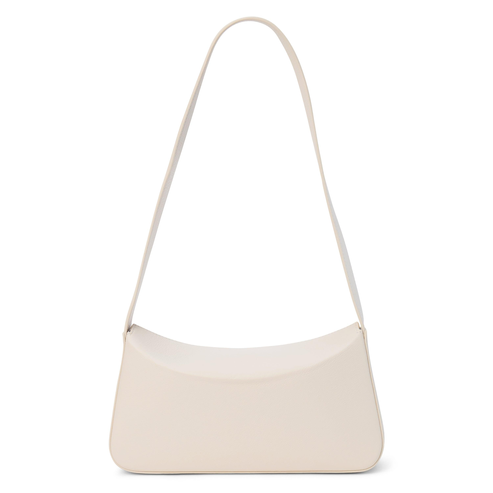
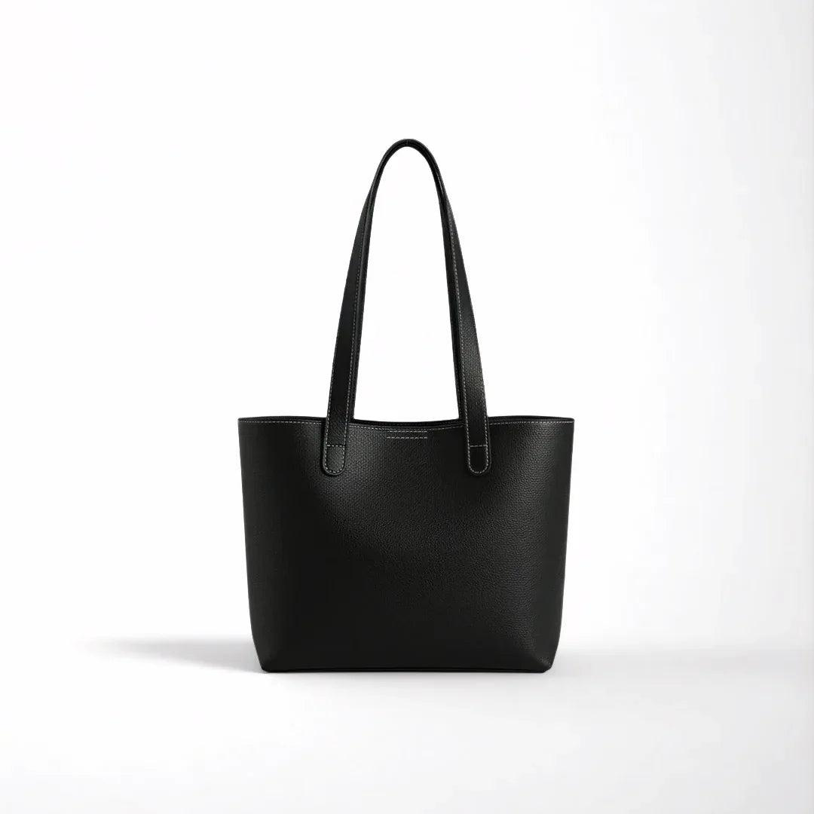
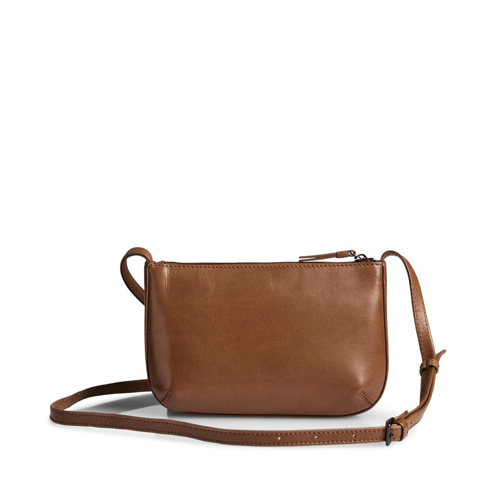

Selamat Datang di Aylum Bags
Aylum Bags menyediakan berbagai pilihan tas
dengan desain modern, kualitas terbaik, dan
harga yang terjangkau untuk menemani aktivitas
sehari-hari Anda.
✓ Temukan berbagai pilihan tas dengan desain modern, kualitas terbaik,
dan nyaman digunakan untuk menemani setiap aktivitas Anda!
Tentang Aylum Bags
Aylum Bags merupakan toko tas yang menyediakan berbagai jenis tas dengan desain menarik, nyaman digunakan, dan memiliki kualitas yang baik.
Kami menghadirkan pilihan tas untuk menunjang penampilan dan kebutuhan sehari-hari.
Temukan gaya terbaikmu bersama Aylum Bags.
Katalog 5 Tas Unggulan
Daftar tas unggulan yang kami sediakan untuk Anda:
|
Gambar
|
Nama Tas
|
Deskripsi Produk
|
Warna
|
Harga
|
|

|
1. Backpack
[Tas Ransel]
|
Tas dengan kapasitas penyimpanan yang cukup
luas untuk kegiatan kuliah, bekerja, dan aktivitas lainnya.
Desain yang casual dengan mengutamakan kenyamanan.
|
Hitam, Cream, Coklat
|
Rp 135.000
|
|

|
2. Handbag
[Tas Tangan]
|
Tas dengan bentuk yang elegan dan tampilan feminin,
cocok untuk acara formal dan kegiatan sehari-hari.
Desain yang rapi dan stylish.
|
Putih, Cream, Baby pink
|
Rp 150.000
|
|

|
3. Shoulder Bag
[Tas Bahu]
|
Tas dengan desain yang modern dan praktis,
cocok untuk digunakan sehari-hari.
Kapasitas penyimpanan yang cukup.
|
Hitam, Cream, Coklat
|
Rp 120.000
|
|

|
4. Tote Bag
[Tote Bag]
|
Tas dengan desain simpel casual yang mudah dipadukan
dengan berbagai gaya pakaian.
Cocok untuk kuliah, bekerja, maupun aktivitas sehari-hari.
|
Hitam, Cream, Putih
|
Rp 95.000
|
|

|
5. Sling Bag
[Sling Bag]
|
Tas berukuran praktis dengan tali selempang yang
memudahkan pengguna saat beraktivitas.
|
Coklat, Cream, Hitam
|
Rp 110.000
|
Aylum Bags - Keunggulan Produk
Mengapa Memilih Aylum Bags?
- Desain Menarik: Menyediakan berbagai model tas yang modern dan stylish.
- Kualitas Terjamin:Mengutamakan bahan yang nyaman dan berkualitas.
- Harga Terjangkau: Menawarkan produk dengan harga yang bersaing.
- Pilihan Beragam:Memiliki berbagai jenis tas sesuai kebutuhan.
- Pelayanan Ramah: Siap membantu pelanggan memilih produk.
Formulir Pemesanan dan Menanyakan Produk
Isi formulir di bawah ini untuk menanyakan atau melakukan
pemesanan produk:
Hubungi Kami
- WhatsApp / Telepon:
0812-3456-7890
- Email:
hello@aylumbags.com
- Jam Operasional:
Senin - Sabtu (10.00 - 19.00 WIB)
- Alamat Toko:
Jl. Anggrek. 09, Toko Tas Aylum Bags
|